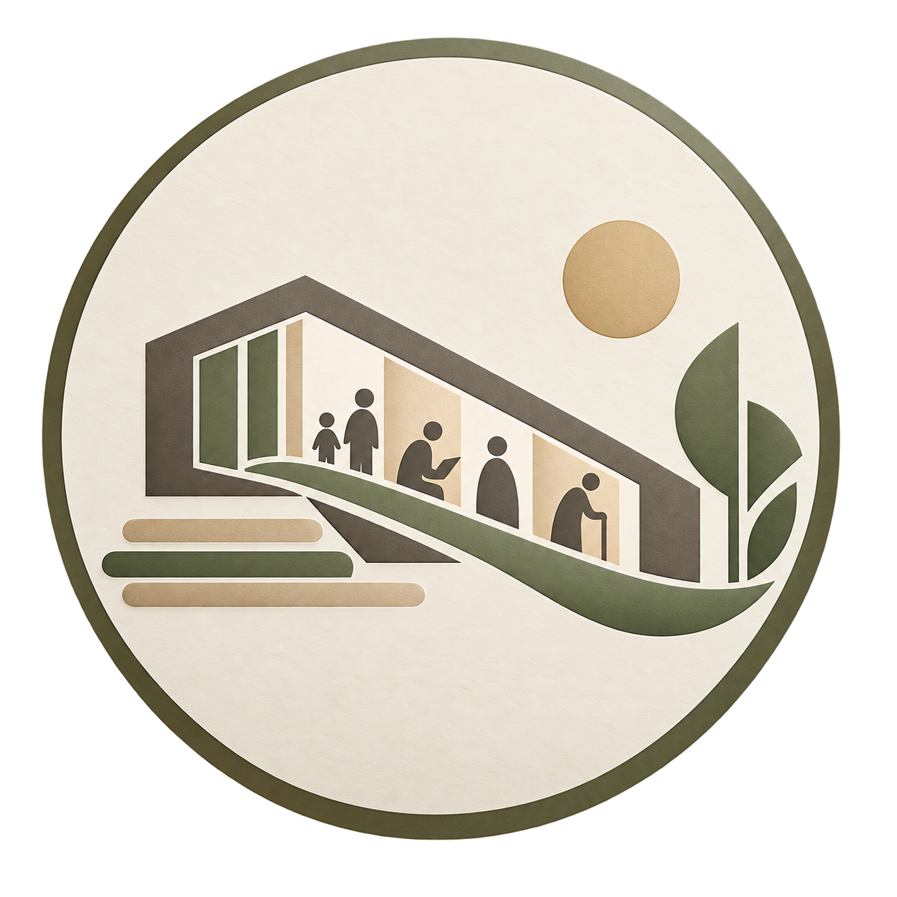
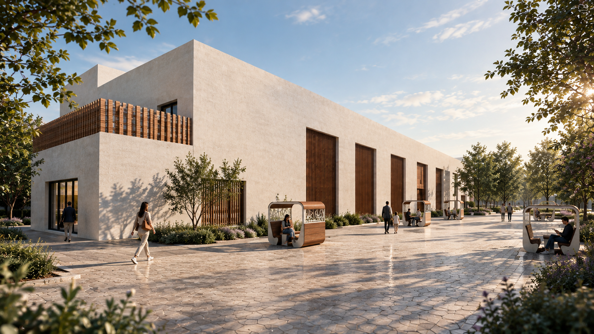

مشارکت بیننسلی
فضاهای اختصاصی برای گروههای سنی مختلف در کنار فضاهای مشترک طراحی میشوند تا ارتباط و انتقال تجربه شکل بگیرد.

مرکز فرهنگیمشارکت بیننسلی · قم برنامه امروز ↗THESIS / ARCHITECTURE · QOM · 1405
فضایی برای یادگیری، تجربه و گفتوگو؛ جایی که کودک، نوجوان، جوان، بزرگسال و سالمند در کنار هم معنا پیدا میکنند.

01 / IDEA
پروژه بر مشارکت بیننسلی، یادگیری، تعامل اجتماعی و انعطافپذیری فضایی تمرکز دارد.
فضاهای اختصاصی برای گروههای سنی مختلف در کنار فضاهای مشترک طراحی میشوند تا ارتباط و انتقال تجربه شکل بگیرد.
کلاسها و کارگاههای فرهنگی و هنری، یادگیری رسمی و غیررسمی را در مقیاسهای مختلف پشتیبانی میکنند.
فضاها قابلیت تغییر نحوه استفاده و چیدمان را برای برنامههای متنوع مرکز دارند.
نور طبیعی، کنترل تابش و فضاهای نیمهباز در پاسخ به شرایط اقلیمی گرم و خشک قم دیده میشوند.
02 / GENERATIONS
بازی آموزشی · خلاقیت · کاردستی · قصهگویی
یادگیری · رسانه · هنر · گفتوگو · فعالیت اجتماعی
فرهنگ · آموزش · هنر · گردهمایی · کتابخانه
فیزیوتراپی سبک · فعالیت سبک · تعامل اجتماعی · خاطرهگویی
03 / PROGRAM
ثبتنام فقط برای کلاسها فعال است. ظرفیتها بهصورت جلسهای محاسبه میشوند.
04 / GALLERY
فضای نمایش برای تجربه فرهنگی، آثار و روایتهای مرتبط با مشارکت بیننسلی.
05 / LIBRARY
یک فضای مطالعه و مکث برای استفاده عمومی مرکز؛ بدون ثبتنام، رزرو یا ظرفیتسنجی.
07 / RESEARCH
پروژه از پیوند میان آموزش، فعالیت فرهنگی و تعامل اجتماعی شکل میگیرد. خوانایی مسیرها، دسترسی مناسب، انعطافپذیری فضایی، نور طبیعی، کنترل تابش و آسایش حرارتی از اصول کلیدی هستند.
فضاهای مشترک و نیمهباز نقش واسط میان گروههای سنی را دارند و در کنار فضاهای اختصاصی، امکان تعامل کنترلشده و انتخابپذیر را فراهم میکنند.
08 / PROJECT DETAILS
دانشجوی معماری
09 / ARCHITECTURE AI
اول موضوع را انتخاب کن، بعد سؤال را بزن؛ پاسخ معماری همانجا در پنجره گفتوگو باز میشود.
پس از انتخاب سؤال، پاسخ در این بخش نمایش داده میشود.